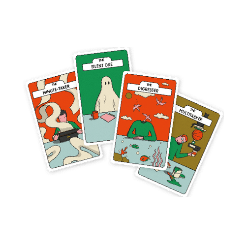

Mit der Academy erhaltet ihr im Business-Plan praxisnahe Lernmodule rund um Facilitation und wirksame Transformation.
Gemeinsam mit 9 Spaces zeigt Plan International Deutschland, wie wertebasiertes Arbeiten Orientierung gibt – nach innen wie nach außen.

Dieses Tool hilft euch dabei, typische Verhaltensmuster in Meetings zu reflektieren und zu ändern.
Dieses Tool hilft euch dabei, durch einheitliches Vokabular mehr Klarheit und Ergebnisorientierung in Meetings zu bringen.
Ein Tool, das euch dabei hilft, verteilte Führung mithilfe von Standard-Rollen spielerisch auszuprobieren.
Ein Tool, das euch im Team dabei hilft zu bewerten, wie viel Zeit ihr in Meetings verbringt – und was sich daran ändern soll